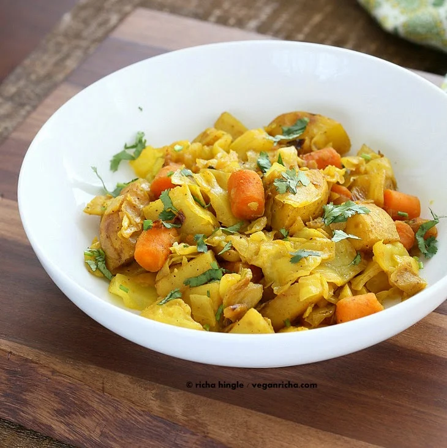

Atakilt Wat

Atakilt Wat is a Ethiopian cabbage side that is so close to the Indian cabbage dishes and yet has its own
flavor profile. Cook the dish at lower heat for best results. Serve with Ethiopian flat breads or other flat
breads and lentil stews.
Ingredients
- 2 tsp olive oil or vegan butter, divided
- 2 cloves garlic, minced
- 1 tsp minced ginger
- 1 green chili, chopped (optional)
- 1/2 cup chopped onion
- 1/4 tsp cumin powder
- 1/2 to 3/4 tsp turmeric powder
- 1/4 tsp fenugreek seeds or powder
- 1/4 tsp cardamom powder
- 1/4 tsp cinnamon powder
- 1/8 tsp cloves powder
- a generous dash of black pepper
- 3/4 cup sliced carrots
- 2 medium potatoes, chopped, 1.5 loaded cups
- 1/2 head of cabbage, finely chopped
- 1/2 tsp salt
Steps
-
In a large skillet, add 1 tsp oil and heat at medium-low. Once hot, add garlic, ginger, chili, and
onion. Mix, cook for 4 minutes.
-
Add the cumin, turmeric, fenugreek seeds, cardamom, cinnamon, cloves, and black pepper. Mix and cook for
3 minutes to infuse the oil and to continue cooking the onion to golden.
-
Add the carrots, potato, and mix well. Add cabbage and 1/4 tsp salt. Mix well, cover and cook for 15
minutes. Stir once in between.
-
Add 1/4 tsp or more salt, and 1 tsp olive oil. Mix in. Deglaze at this time with water if needed. Cover
and cook for another 15 minutes or until the potatoes are tender.
- Serve hot with Ethiopian flatbread Injera, lentil wat, and Ethiopian greens (gomen wat).